TENGAH MALAM
Tengah malam adalah saat pergantian (transisi) dari suatu hari ke hari berikutnya bersamaan dengan pergantian tanggal.
Tengah malam merupakan kebalikan dari tengah hari.
Pada masa modern ada waktu tengah malam, yang menandai perubahan hari, di waktu ISO 8601 (sistem 24-jam) tengah malam pukul 00:00:00,
sedangkan di dalam Bahasa Inggris (sistem 12 jam) tengah malam pukul 12:00:00 a.m.
Dalam Doomsday Clock dari Bulletin of the Atomic Scientists, tengah malam melambangkan perang nuklir.
Tengah malam sebagai waktu juga ada dalam dongeng Cinderella saat sebuah tugas harus diselesaikan dari saat itu.
ANAK-ANAK HIJAU DARI WOOLPIT
Suatu hari pada saat panen, menurut William dari Newburgh yang hidup selama pemerintahan Raja Stephen (1135-1154), para penduduk desa Woolpit
menemukan dua anak yang merupakan kakak beradik, di samping sebuah lubang serigala yang memberikan julukan pada desa tersebut.
Mereka berkulit hijau dan berbicara dengan bahasa yang tidak dikenal, serta mengenakan pakaian yang sangat asing.
Ralph melaporkan bahwa anak-anak tersebut dibawa ke rumah Richard de Calne. Ralph dan William sependapat bahwa kakak beradik itu menolak semua makanan yang
diberikan kepada mereka oleh orang-orang desa selama beberapa hari, sampai akhirnya mereka menemukan beberapa kacang hijau yang kemudian dikonsumsi dengan baik yang membuat mereka bersemangat.
Lantas mereka menyesuaikan diri secara bertahap dengan makanan normal dan dalam waktu yang tidak lama mereka kehilangan warna hijau di kulit mereka.
Kemudian salah satu anak yang lebih muda dari pasangan saudara itu menjadi sakit dan akhirnya meninggal tidak lama setelah mereka berdua dibaptis.
Setelah satu anak yang tersisa berhasil mempelajari bahasa Inggris (Ralph mengatakan bahwa hanya anak perempuan dari pasangan saudara itu yang masih hidup),
ia menjelaskan bahwa mereka berasal dari sebuah daerah yang tidak pernah disinari Matahari, melainkan cahaya seperti senja. William mengatakan anak-anak menyebut
daerah mereka sebagai Taman St. Martin; Ralph menambahkan bahwa segala sesuatu yang ada di sana umumnya berwarna hijau. Menurut William, anak-anak tersebut tidak mampu menjelaskan kedatangan mereka di Woolpit.
Mereka sedang menggembalakan ternak ayah mereka ketika mereka mendengar sebuah suara keras (menurut William, bel dari Bury St Edmunds), dan tiba-tiba mereka berada dalam sebuah lubang serigala tempat mereka ditemukan.
Ralph mengatakan bahwa mereka secara tiba-tiba menghilang ketika mereka mengikuti ternak mereka menuju sebuah gua, dan setelah dibimbing oleh sebuah suara lonceng misterius, akhirnya mereka muncul di negeri Inggris.
Masih menurut Ralph, akhirnya gadis itu dipekerjakan sebagai pelayan di rumah Richard de Calne selama bertahun-tahun, di sana ia dianggap sebagai "anak nakal dan sangat kurang ajar". Dia menikah dengan seorang pria dari King's Lynn,
sekitar 40 mil (64 km) dari Woolpit, di mana Ralph mengatakan ia masih hidup tak lama sebelum Ralph menulis kisahnya. Berdasarkan pada penelitian ke dalam sejarah keluarga Richard de Calne, astronom dan penulis Duncan Lunan telah menyimpulkan bahwa gadis itu diberi nama "Agnes",
dan ia menikah dengan seorang pejabat kerajaan bernama Richard Barre.


 
